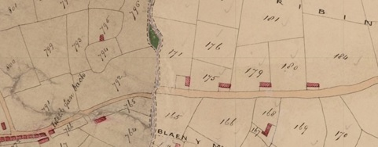

Yr Efail
Credir bod tŷ bychan wrth ymyl Bryn Dirwest a’r Efail oedd enw’r cwbl. Cofiai Ellen Evans y bwthyn bach melyn o’r enw Yr Efail a’i dalcen, lle roedd carreg anferth, at y lôn. Gwnaed y tŷ yn efail wedyn. Nid oes sôn bod yr efail yn cael ei defnyddio yn y cyfnod rhwng 1841 ac 1901 fel efail. Mae stori bod hen wraig yn byw yn y bwthyn ar un cyfnod oedd yn hynod anystyriol ac yn dweud nad oedd ganddi ofn na Duw na dyn. Mi cafwyd hi wedi ei thynnu trwy’r drain a’r meiri yng Nghae Ucha’ Bryn Dirwest.
Yn ôl Ellen Evans roedd tŷ bach ynghlwm wrth Bryn Dirwest a’r Efail oedd enw’r cwbl. Ar ôl adeiladu Bryn Dirwest fel ag y mae o heddiw y daeth yn Bryn Dirwest tua 1896. Cofiai Ellen Evans bod gwraig yn byw yn y bwthyn bach o’r enw Yr Efail a’i dalcen at y lôn. Byddai wedi ei baentio yn felyn o hyd. Roedd carreg anferth yn ei dalcen fel roedd bythynnod y cyfnod hwnnw. Gwnaed y tŷ yn efail wedyn.
Mae stori gan Ellen Evans Alpha, bod hen wraig yn byw yn y bwthyn ar un cyfnod oedd yn hynod anystyriol ac yn dweud nad oedd ganddi ofn na Duw na dyn. Mi cafwyd hi wedi ei thynnu trwy’r drain a’r meiri yng Nghae Ucha’ Bryn Dirwest. Yn y cyfnod hwnnw byddai’r hen bobl yn dweud ‘Y cythral â’th gipio’ os byddach chi mewn rhyw ddrwg mawr neu rhywbeth felly.
Ymddengys y cofnod hwn ym map degwm 1839 bod adeilad yng nghae 171 ac mae’r adeilad hwn a’i dalcen at y ffordd. Y tirfeddianwr oedd Thomas Assheton Smith a’r preswyliwr yn yr adeilad oedd Richard Owen. Tybed mai hon oedd yr Efail? Yn y catalog roedd y cae yma - 171 a chae 172, 173 ac 174 yn rhedeg i fyny am y mynydd yn dod o dan yr un enw ac yn rhan o Cae Cribin oedd, bryd hynny, yn mynd i fyny at derfyn Ty’n Cae.
